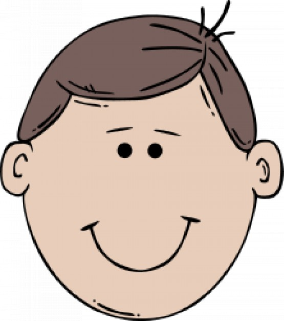

Tash Me
You are going to make a program that lets the user to put a mustache onto a face!
1. Find a photo of a face, it can be anyone you want:
a. Find an image on google
b. Right click on the image and select "Save Image As"
c. Rename your image something short (e.g. "friend")
d. Save the image on your Desktop
2. Find the starter code for this recipe and open it using Processing. Hint: the file name is Tash_Me.pde and it should be in the section1 folder.
3. Drag the image you saved in Step 1 from the Desktop and drop it into your sketch
4. On line 1 of your sketch, add the following code:
PImage mustache; PImage friend;
5. Load your image by adding the following code to the setup() method:
friend = loadImage("friend.jpg");
size(800, 600);
friend.resize(width,height);
6. Change “friend.jpg” in the above code so that it matches the name of your image.
7. At the beginning of the draw() method, set “friend” as your background using the background() method.

TESTING
Run the program. Is your image displayed in the sketch? If not, get this part working before you move on to the next step.
8. Now find an image of a mustache. Pick one that has a transparent background. Search for “mustache transparent” or “mustache png”. Follow steps a - d under step 1, then drag and drop it onto your sketch.
9. In the setup()method, load the mustache image using the following code:
mustache = loadImage("mustache.png");
10. Change “mustache.png” from the previous step so that it matches the name of your image and resize it if you need to (see step 5 for a hint on how to resize an image).
11. In the draw() method, add the mustache to your sketch using:
image(mustache, 150, 400);
TESTING
Run the program. Is your mustache displayed on the face? If not, get this part working before you move on to the next step.
12. Change the previous line of code so that the mustache moves with your mouse! Hint: Processing gives you mouseX and mouseY to help you do this.
13. Use an if statement to make the mustache appear only when the mouse is pressed. Hint: Processing gives you mousePressed to help you do this.
14. Inside of your if statement, redraw the background before you draw the mustache. This will make it so that only one mustache appears at a time.
EXTRAS
15. Add or subtract a number from mouseX and mouseY when drawing the mustache so the middle appears exactly where you click the mouse.
16. Draw a hat on your image when the right mouse button is clicked using:
if (mouseButton == RIGHT){
}